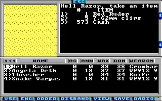

Game Tutorial Step 4: Making loot bags
With action class 5 you can create loot bags. Usually these actions are not directly connected to a square but to other actions so they are the result of a slayn monster or a solved puzzle. But in this example we are going to connect a square directly to loot bag. For loot bags it's recommended to always use the newActionClass and newAction attributes to reset the square to something different after the loot bag has been cleared. If you don't use these attributes then the loot bag will stay all the time on the map but it will be empty.
<actions actionClass="5">
<loot id="0" newActionClass="0" newAction="0">
<item value="0x14" />
<item value="0x1f" quantity="5" />
<item value="0x36" />
<itemGroup value="0x0d" quantity="2" />
<randomMoney quantity="1000" />
</loot>
</actions>
The code above defines a loot bag with a Red Ryder (item 0x14), five 7.62mm clips (item 0x1f), two random explosives (item group 0x0d), a rope (item 0x36) and a random amount of money with a maximum of 1000 USD. You can find a list of items and item groups in the Wiki. If you want a fixed amount of money instead then you can use the fixedMoney tag instead of the randomMoney tag. Please note that money must always be the last item in the loot bag. Otherwise strange things can happen.
When the last item is taken from the loot bag then the square is set to action class 0 and action 0.
To connect a square with the new loot bag you just have to set it's action class to 5 and the action to 00. You don't need to set a special tile. The game will draw the loot bag sprite automatically over the current tile of the square.
Please note that it's not good to have multiple squares referencing the same loot bag. They will both contain the same content. So if you take the Red Ryder from the first bag then it will also be removed from the second bag which may confuse the player.
You can download the current state of the map here: map01.xml.
